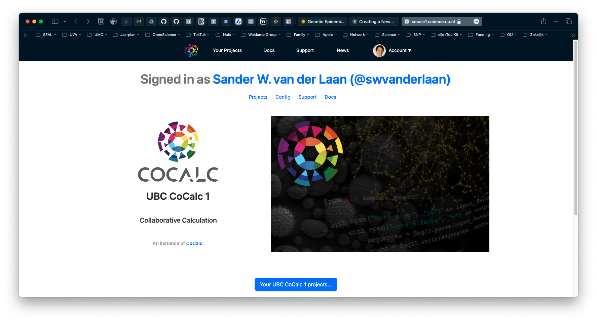
5 Getting started - CoCalc
Now, pay attention. You came here through the course Genetic Epidemiology, which means you don’t have to do anything. All the data you need are already downloaded and everything was set up for on the server, just follow the link as provided by the course-instructors.
Here we provide a few short instructions to navigate CoCalc.
5.1 Starting the course on CoCalc
Once logged in you should see a screen similar to the one below.
Navigate to the Course by clicking on the blue Your UBC CoCalc 1 projects…-button and selecting the course Genetic Epidemiology you are following.
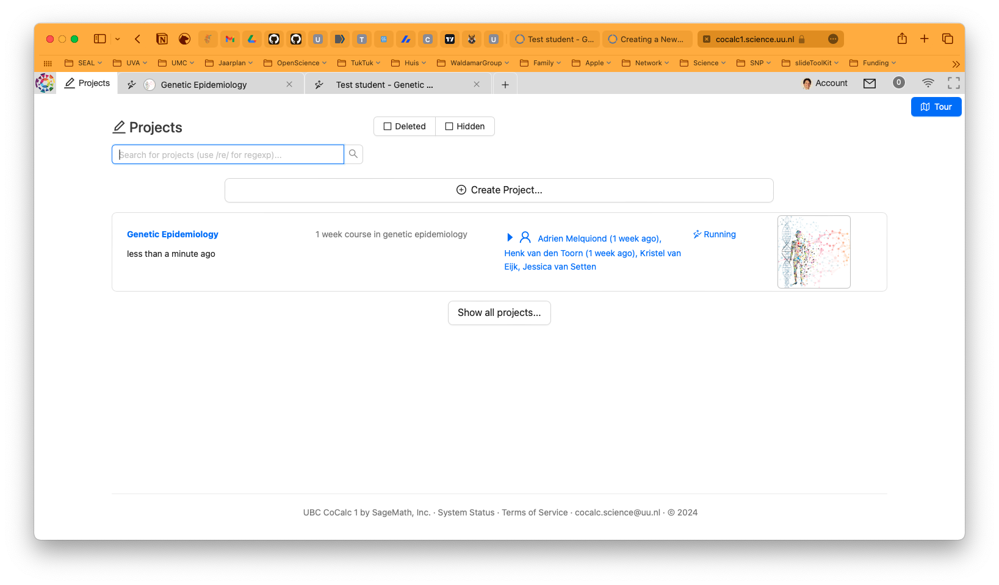
Once you are in the course, you will see a screen like this one below.
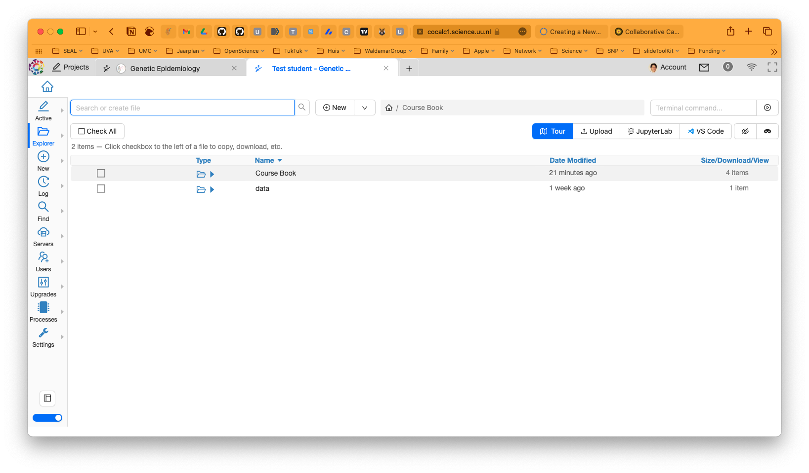
In the Course Book you’ll find the handouts you need. In the share data folder you will find the data you’ll need.
5.2 But wait, what is CoCalc anyway?
CoCalc is an online platform that allows you to work with Jupyter Notebook, LaTeX, and other tools. It is a great tool for working with data and code, and it is especially useful for collaborative work.
5.3 Okay, and what’s a Jupyter Notebook?
Jupyter Notebook is an interactive environment for writing and running code, and at the same time, it allows you to add text, images, and other content to your document. This makes it a great tool for creating reports, tutorials, and presentations. Jupyter Notebook has support for over 40 programming languages, including those popular in Bioinformatics such as Python and R.
5.4 How does a Jupyter Notebook work?
A Jupyter Notebook is made up of cells. Some contain instructions, others contain lines of code, while others combine both (like this one). You can run each cell by selecting it and pressing Shift+Enter. The code in the cell will be executed, and the output will be displayed below the cell. A cell can be a ‘code’ cell, a markdown cell, or a raw ‘text’ cell.
- ‘code’ is for code from a given programming code, for instance
RorPython; - ‘text’ is for plain text;
markdownis formarkdowntext; you can learn more about markdown here.
5.5 And what is the Force behind a Jupyter Notebook?
Each notebook is associated with a single operating system called a kernel. A kernel is a program that runs and interprets the code you write in a notebook. It is responsible for executing the code and returning the results. Each kernel has its own environment and programming language, as well as its own set of libraries and packages. Luckily, for the purpose of this practical everything you need is installed.
5.6 How to use a Jupyter Notebook
Working with a Jupyter Notebook is easy. Here are a few tips to get you started:
- Some commands take a few seconds to run (indicated by a green dot left of the command), please wait for it as the next command usually won’t run when the previous has not been executed.
- To restart from a fresh notebook, select Restart and Clear Output of the Kernelmenu.
- To execute the current chunck of code, click on the arrow (play button) in the top bar or use Shift+ENTER (CTRL+ENTER also works).
- To add text (an answer to question for example), double-click or hit the return/enter key.
- To add a new cell, select Insert Cell Below from the Insert menu.
- To delete a cell, select Delete Cell from the Edit menu.
- To save your work, select Save and Checkpoint from the File menu.
- To download your work, select Download as from the File menu.
5.7 Trouble shooting Juptyer Notebook
Sometimes things go awry for no apparent reason. Here are a few tips to get you back on track:
- When the command seems to freeze, you can interrupt the command by in the Toolbar going to Kernel > Interrupt kernel.
- If that doesn’t help or CoCalc seems to crash, you can restart the kernel by selecting Restart Kernel from the Kernel-menu.
The great thing is, that after a freeze and restart, you can continue from where you were. But always first go to the right directory again since the kernel doesn’t remember your previously executed commands.
5.8 CoCalc and this Practical Primer
In the course we use CoCalc as we can precisely control what is installed and what is not. And you don’t have to worry about installing software or libraries. Another advantage is that you can work on the practical from anywhere, as long as you have an internet connection. And lastly, all the data you need is already there, so you don’t have to worry about downloading it and we save a lot of space since you will all be working from the same source data.
This practical is associated with both the R and bash programming language. We use plink, which is a Linux-program in the Terminal (see Chapter 4) and uses bash, so plink needs a Bash kernel. The data from the plink analyses are parsed and plotted using R code, and so we also need a R kernel.
CoCalc has both kernels installed, so you could run both bash and R code in the same notebook. But the command to make this work is a bit complicated, so we decided to split the bash and R code into a virtual Terminal for the bash codes and a Jupyter Notebook with a R kernel for the R code.
This means you have to create a new notebook for the
Rcode. And a new Terminal for thebashcode. In the next section we explain how you can do this.
Throughout this book, the label above each code block tells you where to run it: Terminal means the CoCalc Terminal, R means your Jupyter Notebook with the R kernel, and Output shows what you should see on your screen (do not type that).
5.9 Beginning your own Jupyter Notebook with a R kernel
For the course we need to create a Jupyter Notebook with a R kernel to create all the plots. To start your own notebook, you can do so by clicking on the New button and selecting Jupyter Notebook.
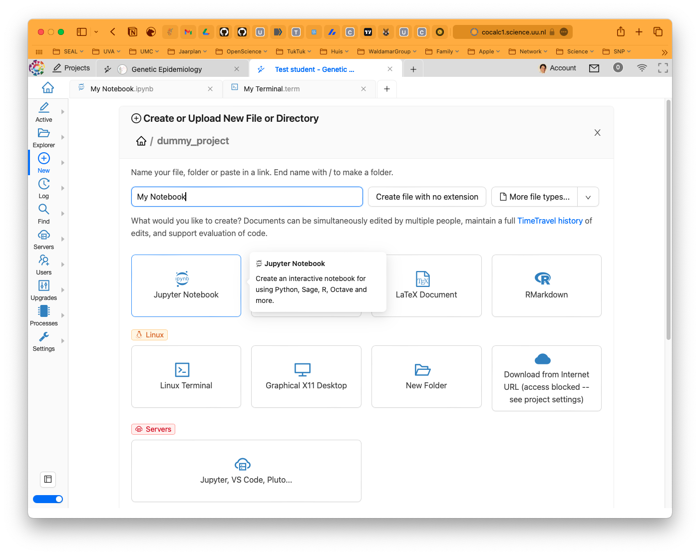
You will probably get a screen asking you to select a kernel. You should choose R.
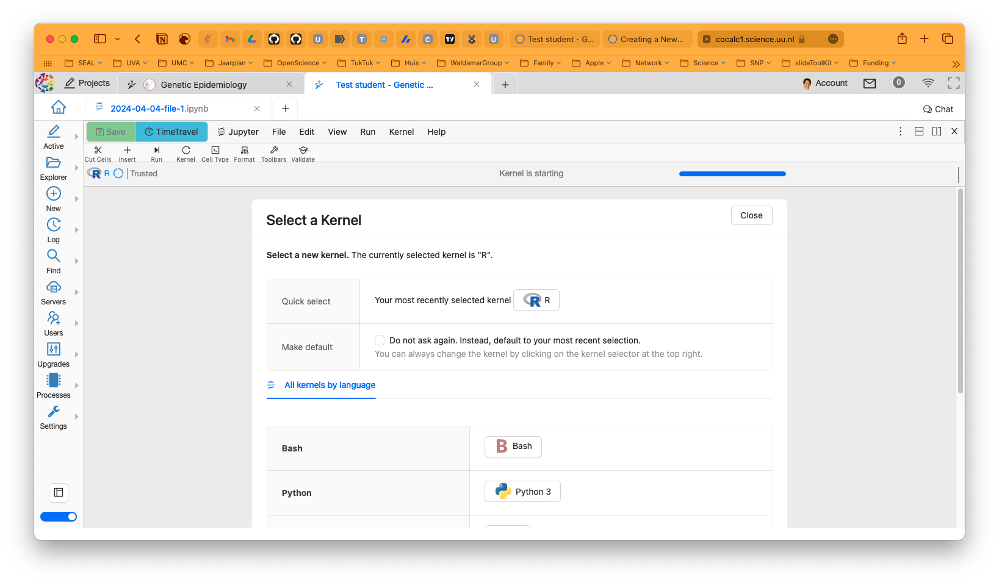
Now you are ready to start your own R Notebook - like below. You can create a new ‘cell’ with format ‘code’ or ‘text’ or ‘markdown’ and start typing.
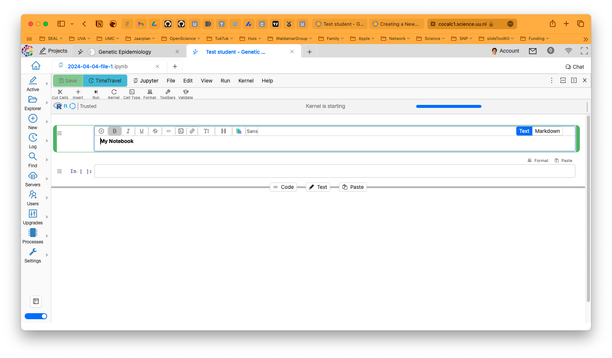
You could get your working directory by typing getwd() in a cell and pressing Shift+Enter.
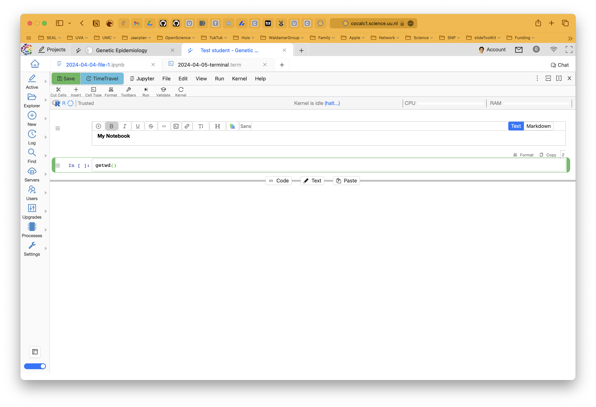
Or you could list the contents of the working directory by typing list.files() or dir() in a cell and pressing Shift+Enter.
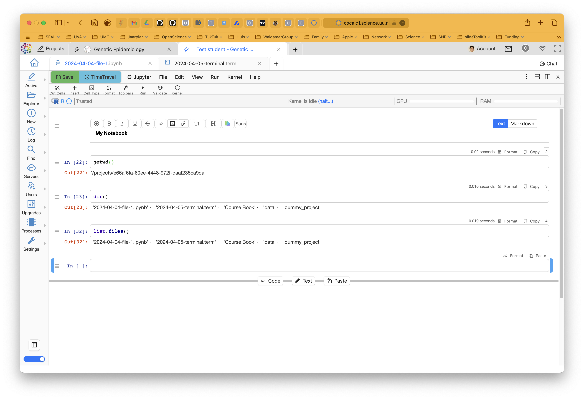
You could also create a dummy plot with R in this notebook.
R
# Define 2 vectors
cars <- sample(1:250,250, replace=F)
trucks <- sample(1:250,250, replace=F)
# Graph cars using a y axis that ranges from 0 to 250
plot(cars, type="o", col="blue", ylim=c(0,250))
# Graph trucks with red dashed line and square points
lines(trucks, type="o", pch=22, lty=2, col="red")
# Create a title with a red, bold/italic font
title(main="Autos", col.main="red", font.main=4)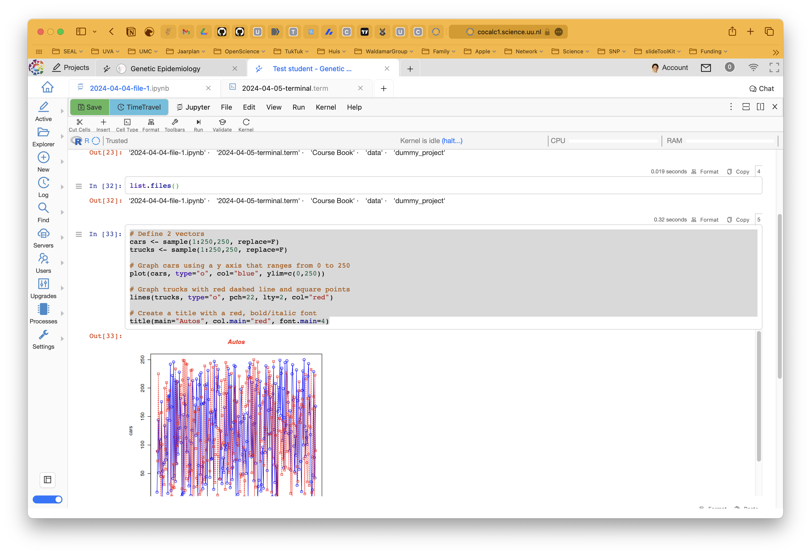
5.10 Beginning your own Terminal for bash code
For the course we need to create a Terminal to run bash code. To start your own Terminal, you can do so by clicking on the New button and selecting Terminal.
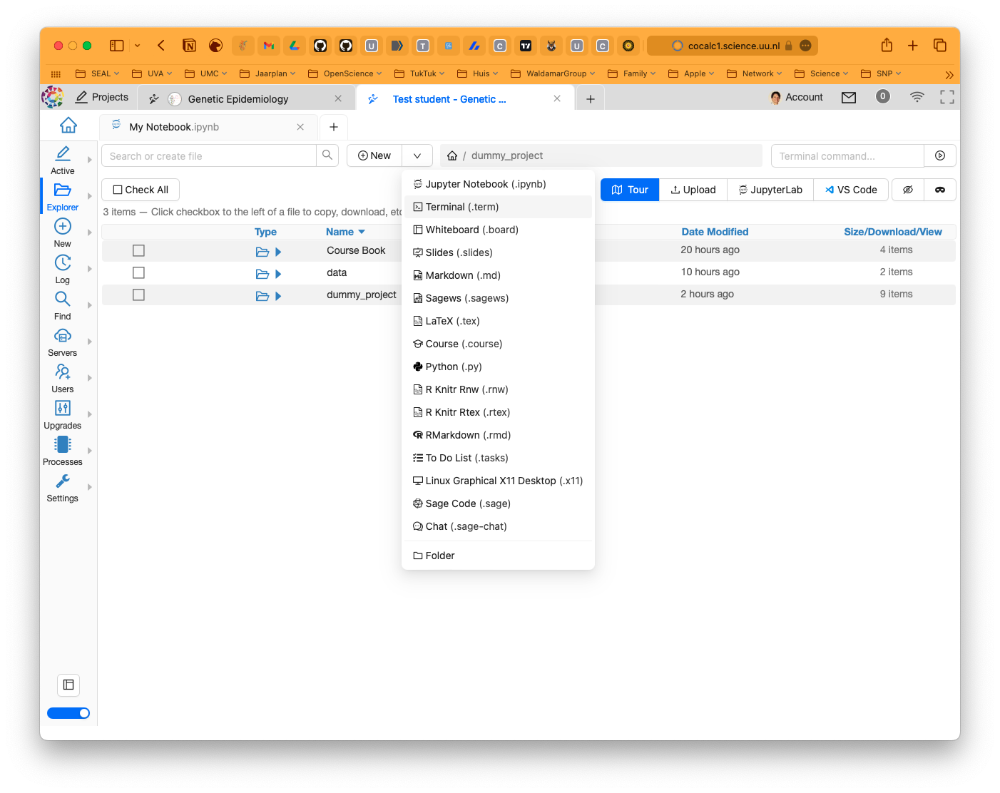
Type in ‘My Terminal’ and hit the Create button.
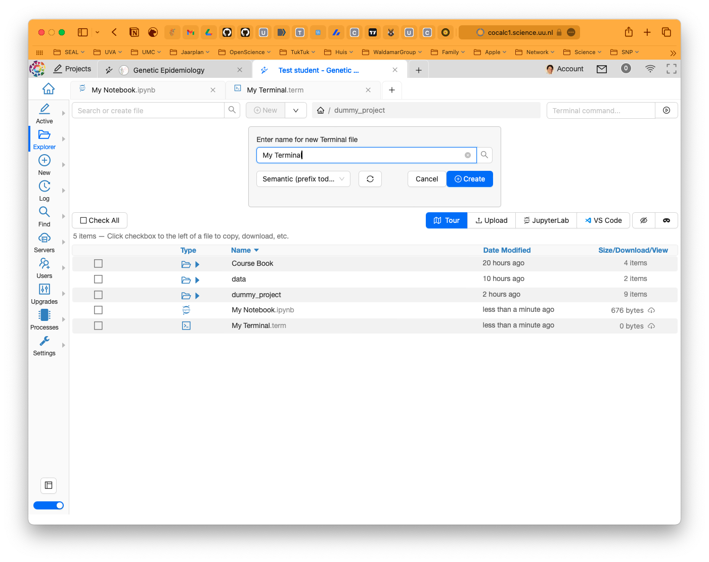
A new tab will open with a Terminal.
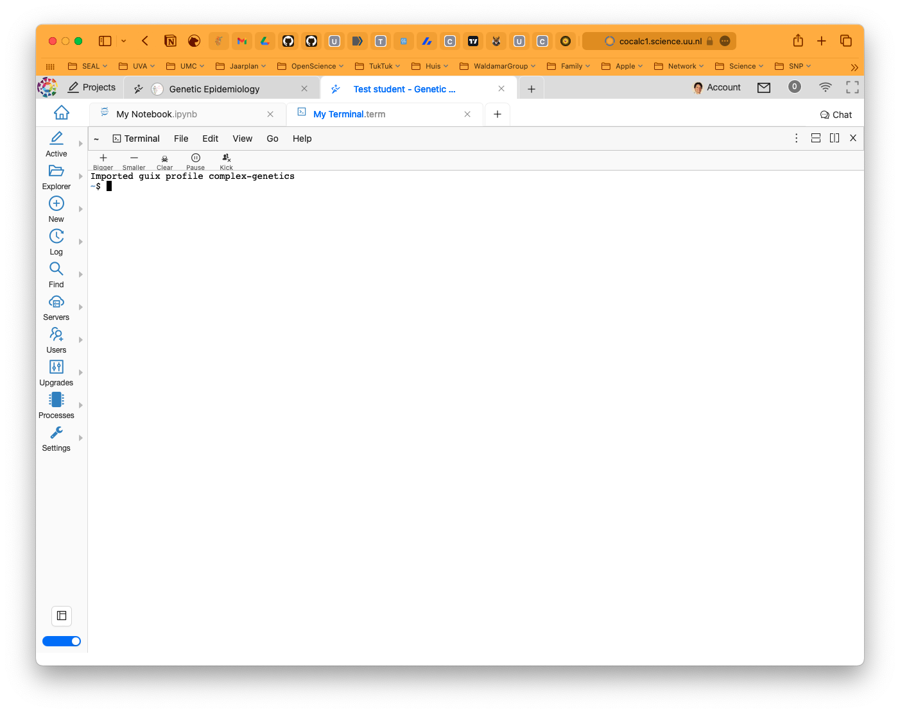
Now you can start typing your bash commands. Let’s see what we have in the directory you’re at by typing ls. Just check Google to find some great cheatsheets on common bash commands for Terminal.
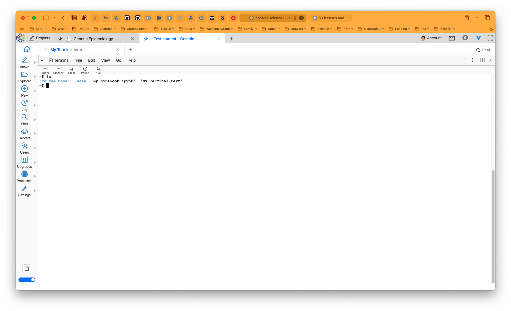
Let’s review what we see here. First of all there are two colors, blue and black. The blue ones are directories, the black ones are files. The directories are:
Course Book, contains the handouts;data, contains the data you need for the course;
The files are:
My Notebook.ipynb, the Jupyter Notebook with aRkernel you just created;My Terminal, the terminal you just created which can handle thebashlanguage and where you can runplink.
We can also list the contents of the data directory by typing ls ~/data/shared/ in the Terminal. The ~ meanse ‘home’, or which could also be written as $HOME.
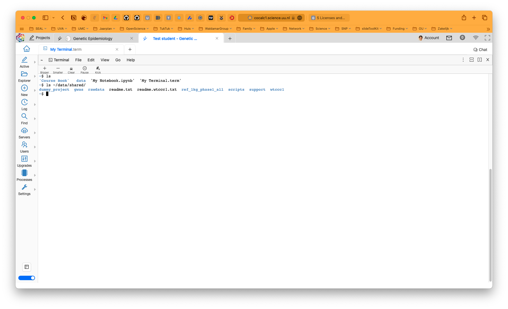
Let’s check out the contents of the readme.txt file.
Terminal
cat ~/data/shared/readme.txt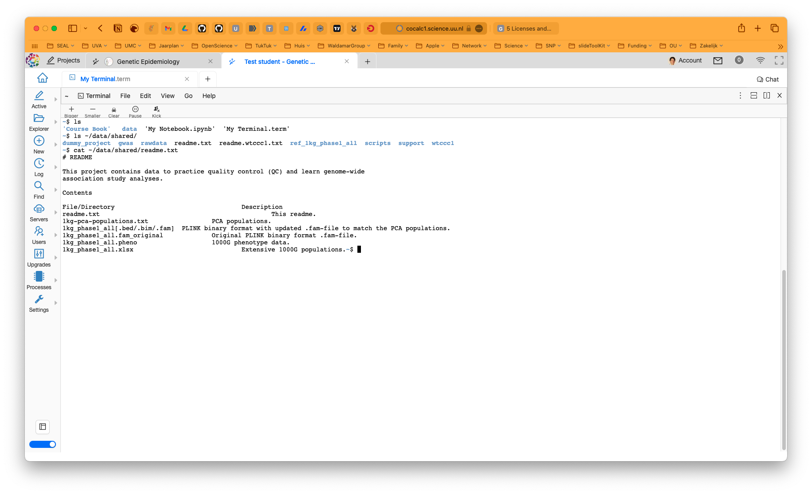
As I wrote, we installed plink for you, but just to be sure, let’s check if it is installed. Type plink in the Terminal and press ENTER.
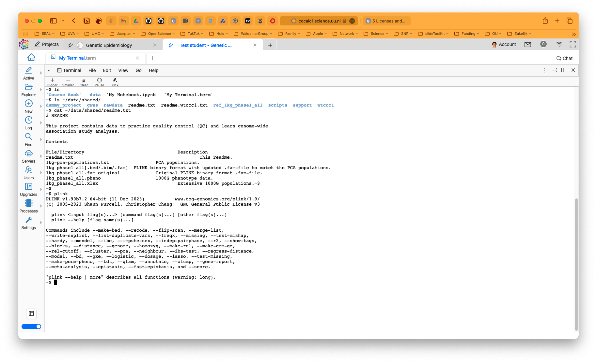
5.11 This book and CoCalc
This book is designed to be used in conjunction with bash and R and it was tested on macOS and Linux. Since you’re working in CoCalc you always start in ‘home’, that is ~ - you can navigate there with cd ~. All the data are relative to ‘home’, so they are here: ~/data/shared.
This means that all the commands in this book are relative to ‘home’ too. Throughout the book you will find plink commands that you can run in the Terminal. You can copy these commands and paste them in the Terminal you just created. And the R commands work in the Jupyter Notebook you just created.
5.12 Your OpenGWAS token
Later in this primer, in Chapter 19, you will use TwoSampleMR to perform a Mendelian randomisation. This package retrieves data from the IEU OpenGWAS database, which requires a free personal token: a long string of characters that works like a password. Getting one takes a few minutes, so let’s do that now.
- Log in at https://api.opengwas.io/profile/, for example with your GitHub, Google or Microsoft account.
- Click to generate a new token and copy it.
- Open your
.Renvironfile fromR. This file stores settings thatRreads every time it starts.
R
install.packages("usethis") # only if you do not have it yet
usethis::edit_r_environ()- Add a line with
OPENGWAS_JWT=followed directly by your token. If the file already contains other lines, keep them. It should look something like this:
.Renviron
R_LIBS_USER=~/Library/R/%v/library
OPENGWAS_JWT=eyJhbGciOiJSUzI1NiIsImtpZCI6...the-rest-of-your-token...
ImportantGetting
.Renviron right
- Put the token directly after the
=: no spaces, no quotes. - The token is one long line; make sure it is not split over several lines.
- End the file with an empty line (press Enter after the token), otherwise
Rmay skip the last line. - Save the file and restart
R(in RStudio: Session > Restart R).Ronly reads.Renvironwhen it starts.
- Check that it works:
R
nchar(ieugwasr::get_opengwas_jwt()) > 0 # should be TRUE
ieugwasr::user() # should show your OpenGWAS user details
WarningYour token is personal
Treat your token like a password. Never put it in a notebook, script or report that you hand in or share, and never paste it in a chat or forum. .Renviron is the right place for it, because it stays in your own home directory. If you think someone else has seen your token, generate a new one on the OpenGWAS website; the old one then stops working.
NoteOn CoCalc
Every student needs their own token, in their own CoCalc project: do not share tokens between projects or with other students. usethis::edit_r_environ() works in CoCalc too; run it in an R notebook and the file opens in a new tab.
5.13 Your LDlink token
For the regional association plots later in this book we use LDlink to look up the linkage disequilibrium (LD) between variants. LDlink also needs a free personal token.
- Request a token at https://ldlink.nih.gov/apiaccess with your name, e-mail address and institution. The token is sent to you by e-mail.
- Add it to the same
.Renvironfile, on its own line:
.Renviron
R_LIBS_USER=~/Library/R/%v/library
OPENGWAS_JWT=eyJhbGciOiJSUzI1NiIsImtpZCI6...the-rest-of-your-token...
LDLINK_TOKEN=abcdef123456- Save, restart
R, and check:
R
nchar(Sys.getenv("LDLINK_TOKEN")) > 0 # should be TRUEThe same rules apply as for your OpenGWAS token: one line, no spaces or quotes, keep it to yourself.
5.14 Are you ready?
Are you ready? Did you bring coffee and a good dose of energy? Let’s start!
Oh, one more thing: you don’t worry about saving your notebook or the Terminal, the ones you just created, CoCalc will automatically save these.
Ok. ’Nough said, let’s move on to cover some basics in Chapter 6.